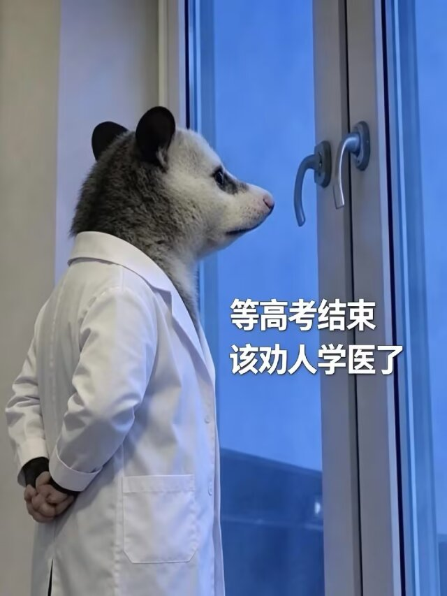

刚高考完的学弟学妹们来学医。女的就学医。男的就学医。理科就临床。文科就中医。个子高学医。个子低学医。好看学医。不好看学医。细心学医。不细心学医。数学好学医。数学不好学医。语文好学医。语文不好学医。他们网上那么多人劝退学医就是怕你们进来分一杯羹，学医非常好的其实我们医学生长得很斯文，站在人群中非常耀眼。他的身体线条非常优美，挺拔的身姿常常走路带风，给人以强壮有内涵的感觉。制服袖管空空荡荡，一双手骨节分明。他的脸庞轮廓深刻，五官分明透露着对医学事业的热爱和坚定，尤其是那双深邃的眼睛，写满了对知识的热情和无线的活力。我们医学生是天之饺子、明日之猩，本科毕业就可以进入各大医院，与病人侃侃而谈，对各种病理现象了如指掌，能够解答所有问题。还会参与国际医学交流，对问题全面分析，让外国学者惊叫连连，拿下令亲戚朋友望尘莫及的几十w年薪。在过年时，面对亲戚的疑难病例和医学常识问题，也能够回答自如。我们总是在脖子上挂着听诊器，显得干练。所以，学医好啊，这是对自我的历练与突破，气质脱俗。
